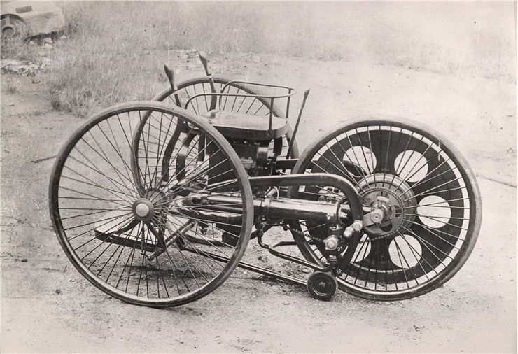
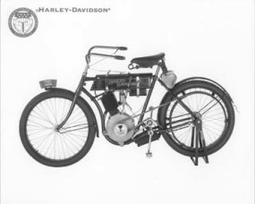

HISTORY ABOUT MOTORCYCLES
History of Motorcycles
With the invention of steam engines and bicycles, 19th century scientists quickly realized that combining of these two technologies could substantially improve transport on public roads.
First wave of motorized bicycles started appearing only few short years after the premiere of Pierre Michaux famous bicycle pedal bike and lasted to mid-1880s. Pierre Michaux’s son Ernest made the first motorcycle in his Paris factory by combining small steam engine to one of their early “boneshaker” bicycle designs. That product kick-started the production of many other models, with several other inventors performed similar feat using various types of steam engines (Sylvester H. Roper used coal burn furnace in 1868, Louis-Guillaume Perreaux used alcohol burner chamber in 1871, Lucius Copeland attached steam engine to English “farthing-penny” high wheel bicycle in 1881).
True revolution in motorcycle technology happened in 1885, when two German inventors Gottlieb Daimler and Wilhelm Maybach managed to produce first motorcycle with a gasoline internal combustion engine. This machine called “Daimler Reitwagen” (riding wagon) is today known as a first example of modern motorcycle that we know and use today. Since its appearance, many other inventors and engineers began making their own versions of engine-equipped bicycle.

Ten years after the premiere of “daimler reitwagen”, German manufacturer Hildebrand & Wolfmüller” started the first motorcycle mass production factory. Their initial business did not manage to stay alive for very long but new safety features and increase of popular demand resulted in great motorcycle expansion during first years of 20th century. Several major manufacturing companies started making their own motorcycle designs, most notably English Royal Enfield, Triumph, American Harley-Davidson, Indian Motorcycle Manufacturing Company and DKW (which held the record for being the largest motorcycle production factory before the World War II).
After the Second World War, lower costs, increased engineering improvements and better road networks insured the widespread success of motorcycle all across the world. Motorcycles became one of the primary source of transport in Asia (especially in big cities) and American “motorbike club” movement (combined with their portrayals in 50s and 60s films) ignited the imagination of entire world population. During 1960s, dominance of American and English manufacturers began to fade with the emergence of several Japanese brands - Suzuki, Kawasaki and the Yamaha. They focused their production to smaller, cheaper and more efficient motorcycle designs, which helped them to secure majority of worlds market.
One of the most popular motorcycle models of all time is “Honda Super Cub”, which was sold in over 60 million units. Their dominance lasted to 1990s when several American and European manufacturers managed to reclaim large parts of world market (today’s most popular western brands include names such as BMW, Ducati, Victory and Harley-Davidson).
Today, motorcycles represent one of the most affordable forms of motorized transport on public roads. Daily over 200 million motorcycles are in use all around the world (together with over 590 million cars). Leading countries with greatest motorcycle use are India (37 million motorcycles/mopeds) and China (34 million motorcycles/mopeds).

The first bicycle to provide all of these features and gain market acceptance was the Rover Safety, designed by John Kemp Starley in 1885. After the Rover pattern took over the market, safety bicycles were simply called "bicycles."It didn't take long for someone to take the user-friendly safety bicycle design and strap on an internal combustion engine. The first to do so successfully was Gottlieb Daimler, who is credited with building the first motorized bicycle -- or motorcycle -- in 1885. Daimler's motorcycle included a single-cylinder Otto-cycle engine mounted vertically in the center of the machine. It also had one wheel in front, one wheel in back and a spring-loaded outrigger wheel on each side for added stability. Its chassis consisted of a wooden frame and wheels with wood spokes and iron rims. Such designs were called "boneshakers" because of the rough, jarring ride they delivered.
The next notable motorcycle was designed in 1892 by Alex Millet. Millet incorporated the basic safety bicycle design, but added pneumatic tires and a five-cylinder rotary engine built into the rear wheel. The cylinders rotated with the wheel, while the crankshaft formed the rear axle.
The Hildebrand & Wolfmueller was the first successful production two-wheeler, patented in Munich in 1894. More than 200 vehicles made it onto the road. Hildebrand & Wolfmueller decided to cool their parallel-twin engine with water, which required a water tank and radiator. Their solution was to build the coolant system into the top of the rear fender.
In 1895, DeDion-Buton introduced an engine that would revolutionize the motorcycle industry by making mass production possible. The DeDion-Buton engine was a small, light, high-revving four-stroke engine that could generate half a horsepower. Although DeDion-Buton used the engine in its motortricycles, motorcycle manufacturers around the world copied and used the design.
American production motorcycles were also based on the DeDion-Buton engine. The two most famous American motorcycle manufacturers to incorporate the DeDion-Buton engine, however, were the Indian Motorcycle Company and Harley-Davidson.
Carl Oscar Hedstrom and George M. Hendee founded the Hendee Manufacturing Company in 1900 with the goal of producing a "motor-driven bicycle for the everyday use of the general public." In 1901, they rolled out the Single, a 1.75-horsepower motorcycle that could reach a top speed of 25 miles per hour. They also decided to roll out a brand-new trade name for their motorcycles. That name was Indian, and it was the world's best-selling motorcycle until World War I.
Founded by William S. Harley and Arthur Davidson in 1902, the Harley-Davidson Motor Company went on to produce the most influential machines of the industry. Its first models used the basic DeDion-Buton layout and borrowed heavily from chassis designs already employed by other motorcycle manufacturers, including Indian, Excelsior and Pope. The Harley-Davidson eventually made its presence known with its sturdy, strong and durable machines. In 1908, Walter Davidson, riding what came to be known as the Silent Gray Fellow, scored a perfect 1,000 points at the 7th Annual Federation of American Motorcyclists Endurance and Reliability Contest. Soon after, Walter Davidson, Arthur's brother, set the FAM economy record at 188.234 miles per gallon. By 1920, Harley-Davidson was the largest motorcycle manufacturer in the world. For more information, check out How Harley-Davidson Works.